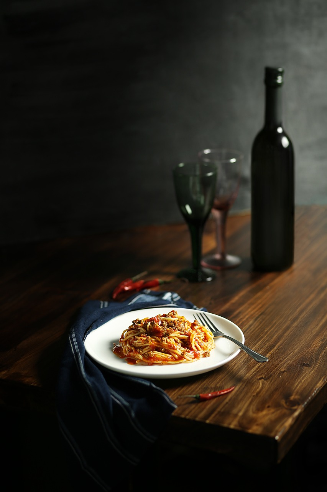

Menu á la Panni
Pasta alla Bolognese
A történetírók szerint az általunk is ismert tészta az arab hódítókkal jelent meg Szicíliában és terjedt el észak felé. Mivel az itáliai félszigeten a klimatikus és egyéb körülmények is jobban kedveztek a durumbúzának, így aztán érthető módon az lett az alap.
Mint említettük, hiába olyan népszerű a bolognai spagetti a világ egy jelentős részén, Bolognában sosemlétezett, mivel ott a ragut alapvetően a helyi, tojásos tagliatelle vagy lasagne tésztával szolgálják fel. A spagetti viszont jellemzően Nápolyból származó (száraz) durumtészta, ennek megfelelően a hozzá készített szószállaga sokkal testesebb, mert jobban megmarad a csúszósabb spagettin, mint a bolognai változat.

Hozzávalók
- 1
- 2
- 3
- 4
- 5
- 6
- 7
- 8
- 9
- 10